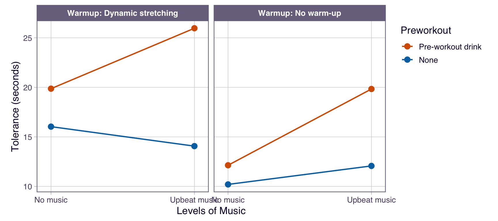
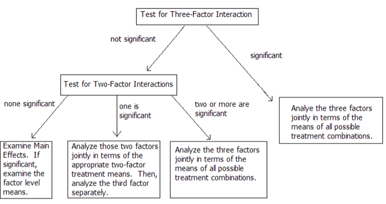
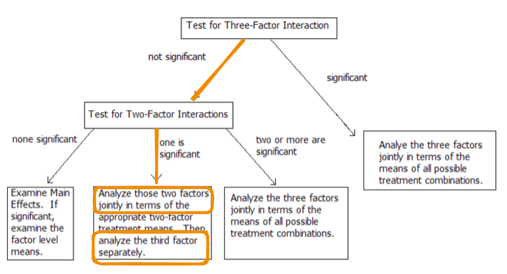

| Subject | Warmup | Preworkout | Music | Tolerance |
|---|---|---|---|---|
| 1 | Dynamic stretching | Pre-workout drink | Upbeat music | 29.2 |
| 2 | No warm-up | Pre-workout drink | No music | 14.8 |
| 3 | Dynamic stretching | Pre-workout drink | Upbeat music | 24.1 |
| 4 | No warm-up | None | No music | 6.1 |
| 5 | Dynamic stretching | None | Upbeat music | 14.6 |
| 6 | Dynamic stretching | Pre-workout drink | No music | 17.6 |
Module 4: Factorial Treatment Structure
Higher-Order Interactions and Analysis Strategy
Example 4.4: Exercise Performance
The effects of warm-up type (no warm-up vs. dynamic stretching), pre-workout supplement (none vs. pre-workout drink), and music type (no music vs. upbeat music) on exercise tolerance were studied in a small-scale experiment involving 24 adults aged 25-35. Exercise tolerance was measured as the number of minutes until the subject reached fatigue while performing on a stationary bicycle. Each participant was randomly assigned to a warm-up type – pre-workout supplement – music type condition before completing the exercise tolerance stress test. The data can be found in 04-stress_test.csv.
Example 4.4: The Data
Study Blueprint

Study Structure
Treatment Structure
A 2x2x2 full factorial between warm-up type (no warm-up vs. dynamic stretching), pre-workout supplement (none vs. pre-workout supplement), and music type (no music vs. upbeat music) for a total of t = 8 treatments.
Experimental Structure
Warm-up type, pre-workout supplement, and music type combinations are randomly assigned to subjects (e.u.) in a CRD with r = 3. The time until reaching fatigue on a stationary bicycle (seconds) is recorded for each subject (m.u.) for a total N = 24 subjects.
Adding a Third Factor (2x2x2)
With three factors -> t = 8 treatments

- main effects: Warm-up, Pre-workout, Music
- two-way interactions: Warm-up x Pre-workout, Warm-up x Music, Pre-workout x Music
- three-way interaction: Warm-up x Pre-workout x Music
What is a three-way interaction?
- A three-way interaction exists when the way two factors interact depends on the level of a third factor.
- AKA: a two-way interaction is not consistent across levels of a third factor.

3-way Treatment Effects Model
\[y_{ijkl}=\mu+\alpha_i+\beta_j+\gamma_k+\alpha\beta_{ij}+\alpha\gamma_{ik}+\beta\gamma_{jk}+\alpha\beta\gamma_{ijk}+\epsilon_{ijkl} \text{ with } \epsilon_{ijkl} \text{ iid }\sim N(0,\sigma^2)\] for \(i=1,2; j=1,2; k=1,2; l=1,2,3\)
where… continued on next slide!
3-way Treatment Effects Model
- \(y_{ijkl}\): is the exercise tolerance (number of minutes until the subject reached fatigue) for the \(l^{th}\) individual receiving the \(i^{th}\) warm-up type, \(j^{th}\) pre-workout supplement, and \(k^{th}\) music type.
- \(\alpha_i\): the effect of the \(i^{th}\) level of warm-up type.
- \(\beta_j\): the effect of the \(j^{th}\) level of pre-workout supplement.
- \(\gamma_k\): the effect of the \(k^{th}\) music type.
- \(\alpha\beta_{ij}\): the interaction effect between the \(i^{th}\) level of warm-up type and \(j^{th}\) level of pre-workout supplement.
- \(\alpha\gamma_{ik}\): the interaction effect between the \(i^{th}\) level of warm-up type and \(k^{th}\) level of music type.
- \(\beta\gamma_{jk}\): the interaction effect between the \(j^{th}\) level of pre-workout supplement and \(k^{th}\) level of music type.
- \(\alpha\beta\gamma_{ijk}\): the interaction effect between the \(i^{th}\) level of warm-up type, \(j^{th}\) level of pre-workout supplement, and \(k^{th}\) level of music type.
- \(ϵ_{ijkl}\): the experimental error associated with the \(l^{th}\) individual receiving the \(i^{th}\) warm-up type, \(j^{th}\) pre-workout supplement, and \(k^{th}\) music type.
3-way ANOVA Table
| SV | DF | SS | MS = SS/DF | F |
|---|---|---|---|---|
| A | a-1 | SSA | MSA | MSA/MSE |
| B | b-1 | SSB | MSB | MSB/MSE |
| C | c-1 | SSC | MSC | MSC/MSE |
| AB | (a-1)(b-1) | SSAB | MSAB | MSAB/MSE |
| AC | (a-1)(c-1) | SSAC | MSAC | MSAC/MSE |
| BC | (b-1)(c-1) | SSBC | MSBC | MSBC/MSE |
| ABC | (a-1)(b-1)(c-1) | SSABC | MSABC | MSABC/MSE |
| Error | (r-1)(abc) | SSE | MSE | |
| Total | N-1 |
Example 4.4: 3-way Skeleton ANOVA
| Source of Variation | DF |
|---|---|
R: Fit 3-way Analysis
This is your roadmap!
Analysis of Variance Table
Response: Tolerance
Df Sum Sq Mean Sq F value Pr(>F)
Warmup 1 176.584 176.584 18.9155 0.0004971 ***
Preworkout 1 242.570 242.570 25.9839 0.0001076 ***
Music 1 70.384 70.384 7.5394 0.0143574 *
Warmup:Preworkout 1 13.650 13.650 1.4622 0.2441432
Warmup:Music 1 11.070 11.070 1.1859 0.2922989
Preworkout:Music 1 72.454 72.454 7.7612 0.0132205 *
Warmup:Preworkout:Music 1 1.870 1.870 0.2004 0.6604336
Residuals 16 149.367 9.335
---
Signif. codes: 0 '***' 0.001 '**' 0.01 '*' 0.05 '.' 0.1 ' ' 1These are your parameter estimates!
Call:
lm(formula = Tolerance ~ Warmup * Preworkout * Music, data = stress_data)
Residuals:
Min 1Q Median 3Q Max
-4.100 -1.842 -0.950 2.217 4.367
Coefficients:
Estimate Std. Error t value Pr(>|t|)
(Intercept) 16.2708 0.6237 26.088 1.54e-14 ***
Warmup1 2.7125 0.6237 4.349 0.000497 ***
Preworkout1 -3.1792 0.6237 -5.097 0.000108 ***
Music1 -1.7125 0.6237 -2.746 0.014357 *
Warmup1:Preworkout1 -0.7542 0.6237 -1.209 0.244143
Warmup1:Music1 0.6792 0.6237 1.089 0.292299
Preworkout1:Music1 1.7375 0.6237 2.786 0.013221 *
Warmup1:Preworkout1:Music1 0.2792 0.6237 0.448 0.660434
---
Signif. codes: 0 '***' 0.001 '**' 0.01 '*' 0.05 '.' 0.1 ' ' 1
Residual standard error: 3.055 on 16 degrees of freedom
Multiple R-squared: 0.7976, Adjusted R-squared: 0.709
F-statistic: 9.007 on 7 and 16 DF, p-value: 0.0001525Check Model Assumptions: \(\epsilon_{ijkl} iid \sim N(0, \sigma^2)\)
3-way Decision Flowchart

What are we testing with the F-tests?
3-way Interaction
\[\scriptsize H_0:\text{ All } \alpha\beta\gamma_{ijk} = 0 \text{ vs } H_A: \text{At least one } \alpha\beta\gamma_{ijk} \ne 0\]
2-way Interactions
\[\scriptsize H_0:\text{ All } \alpha\beta_{ij} = 0 \text{ vs } H_A: \text{At least one } \alpha\beta_{ij} \ne 0\] \[\scriptsize H_0:\text{ All } \alpha\gamma_{ik} = 0 \text{ vs } H_A: \text{At least one } \alpha\gamma_{ik} \ne 0\] \[\scriptsize H_0:\text{ All } \beta\gamma_{jk} = 0 \text{ vs } H_A: \text{At least one } \beta\gamma_{jk} \ne 0\]
Main Effects
\[\scriptsize H_0:\text{ All } \alpha_{i} = 0 \text{ vs } H_A: \text{At least one } \alpha_{i} \ne 0\] \[\scriptsize H_0:\text{ All } \beta_{j} = 0 \text{ vs } H_A: \text{At least one } \beta_{j} \ne 0\] \[\scriptsize H_0:\text{ All } \gamma_{k} = 0 \text{ vs } H_A: \text{At least one } \gamma_{k} \ne 0\]
Let’s go back to our ANOVA Table (i.e., Roadmap)
What should we test first? Then what?
Analysis of Variance Table
Response: Tolerance
Df Sum Sq Mean Sq F value Pr(>F)
Warmup 1 176.584 176.584 18.9155 0.0004971 ***
Preworkout 1 242.570 242.570 25.9839 0.0001076 ***
Music 1 70.384 70.384 7.5394 0.0143574 *
Warmup:Preworkout 1 13.650 13.650 1.4622 0.2441432
Warmup:Music 1 11.070 11.070 1.1859 0.2922989
Preworkout:Music 1 72.454 72.454 7.7612 0.0132205 *
Warmup:Preworkout:Music 1 1.870 1.870 0.2004 0.6604336
Residuals 16 149.367 9.335
---
Signif. codes: 0 '***' 0.001 '**' 0.01 '*' 0.05 '.' 0.1 ' ' 1Error in `knitr::include_graphics()`:
! Cannot find the file(s): "images/046-jmp-anova.png"What should we “dig into”?
- 3-way interaction:
- At an \(\alpha = 0.05\) we do not have enough evidence to conclude there is a significant 3-way interaction between warmup, preworkout, and music on the tolerance (F = 0.2; df = 1,16; p = 0.6604).
What should we “dig into”?
- 2-way interactions:
- We have enough evidence to conclude there is a significant 2-way interaction between preworkout and music on the tolerance (F = 7.76; df = 1,16; p = 0.0132).
- We do not have enough evidence to conclude there is a significant 2-way interaction between warmup and music on the tolerance (F = 1.19; df = 1,16; p = 0.2922).
- We do not have enough evidence to conclude there is a significant 2-way interaction between warmup and preworkout on the tolerance (F = 1.46; df = 1,16; p = 0.2441).
What should we “dig into”?
- Main effects:
- Music.. don’t care.
- Preworkout.. don’t care
- We have enough evidence to conclude there is a significant main effect of warmup on the tolerance (F = 18.91; df = 1,16; p = 0.0005).
What should we “dig into”?

- 2-way interaction between preworkout x music (averaged over warm-up)
- Main effect of warm-up (separately)
R: 2-way Interaction Effect: Preworkout x Music
Averaged over workout levels: none/stretching
Preworkout Music emmean SE df lower.CL upper.CL .group
Pre-workout drink Upbeat music 22.9 1.25 16 19.40 26.4 A
Pre-workout drink No music 16.0 1.25 16 12.50 19.5 B
None No music 13.1 1.25 16 9.62 16.6 B
None Upbeat music 13.1 1.25 16 9.57 16.6 B
Results are averaged over the levels of: Warmup
Confidence level used: 0.95
Conf-level adjustment: sidak method for 4 estimates
P value adjustment: tukey method for comparing a family of 4 estimates
significance level used: alpha = 0.05
NOTE: If two or more means share the same grouping symbol,
then we cannot show them to be different.
But we also did not show them to be the same. Pairwise Comparisons: Preworkout x Music (avg over Workout)
contrast estimate SE df lower.CL upper.CL t.ratio p.value
None No music - (Pre-workout drink No music) -2.88 1.76 16 -7.93 2.16 -1.635 0.3883
None No music - None Upbeat music 0.05 1.76 16 -5.00 5.10 0.028 1.0000
None No music - (Pre-workout drink Upbeat music) -9.78 1.76 16 -14.83 -4.74 -5.546 0.0002
(Pre-workout drink No music) - None Upbeat music 2.93 1.76 16 -2.11 7.98 1.663 0.3740
(Pre-workout drink No music) - (Pre-workout drink Upbeat music) -6.90 1.76 16 -11.95 -1.85 -3.911 0.0061
None Upbeat music - (Pre-workout drink Upbeat music) -9.83 1.76 16 -14.88 -4.79 -5.574 0.0002
Results are averaged over the levels of: Warmup
Confidence level used: 0.95
Conf-level adjustment: tukey method for comparing a family of 4 estimates
P value adjustment: tukey method for comparing a family of 4 estimates R: Main effect of Warmup
Warmup emmean SE df lower.CL upper.CL .group
Dynamic stretching 19.0 0.882 16 16.8 21.2 A
No warm-up 13.6 0.882 16 11.4 15.7 B
Results are averaged over the levels of: Preworkout, Music
Confidence level used: 0.95
Conf-level adjustment: sidak method for 2 estimates
significance level used: alpha = 0.05
NOTE: If two or more means share the same grouping symbol,
then we cannot show them to be different.
But we also did not show them to be the same. contrast estimate SE df t.ratio p.value
Dynamic stretching - (No warm-up) 5.42 1.25 16 4.349 0.0005
Results are averaged over the levels of: Preworkout, Music R: What if there had been a 3-way interaction?
Preworkout Music Warmup emmean SE df lower.CL upper.CL .group
Pre-workout drink Upbeat music Dynamic stretching 26.0 1.76 16 20.44 31.5 A
Pre-workout drink No music Dynamic stretching 19.9 1.76 16 14.34 25.4 AB
Pre-workout drink Upbeat music No warm-up 19.8 1.76 16 14.30 25.4 AB
None No music Dynamic stretching 16.0 1.76 16 10.50 21.6 BC
None Upbeat music Dynamic stretching 14.1 1.76 16 8.54 19.6 BC
Pre-workout drink No music No warm-up 12.1 1.76 16 6.60 17.7 BC
None Upbeat music No warm-up 12.1 1.76 16 6.54 17.6 BC
None No music No warm-up 10.2 1.76 16 4.67 15.7 C
Confidence level used: 0.95
Conf-level adjustment: sidak method for 8 estimates
P value adjustment: tukey method for comparing a family of 8 estimates
significance level used: alpha = 0.05
NOTE: If two or more means share the same grouping symbol,
then we cannot show them to be different.
But we also did not show them to be the same.